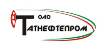
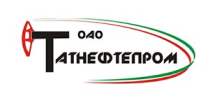

НЕМНОГО О НАС
ООО «СиДиАй» является одной из ведущих компаний Юго-Востока Республики Татарстан, оказывающих услуги по комплексной автоматизации предприятий нефтедобывающей отрасли, предприятий малого и среднего бизнеса.
Коллектив, сформировавшийся за годы работы, является важнейшим капиталом компании. Опыт, знания и энергия наших специалистов — вот залог успеха решения поставленных перед нами задач в кратчайшие сроки и с максимальной отдачей для вашего бизнеса.
Безопасность
Средства мониторинга и аудита вводимой информации позволяют отследить изменения, сделанные пользователями и, в случае спорного вопроса, найти ответственного за качество данных. Возможность кластеризации серверов существенно повышает вероятность безотказной работы информационной системы в случае выхода из строя одного из узлов.
Ежедневное снятие резервных копий гарантирует сохранность информации в случае форс-мажорных ситуаций.
Надежность систем
Программный комплекс построен на СУБД, сервисов обработки данных, web и мобильных технологиях. В составе надежные средства для резервного копирования и восстановления информации. Архитектура системы исключает возможность появления противоречивой информации в базе данных. Физическое хранилище «спрятано» от пользователей за слоем бизнес-логики.
СОБСТВЕННЫЕ РАЗРАБОТКИ

КРОН — контроль и разработка объектов нефтедобычи или Комплекс решения для объектов нефтедобычи. Сочетающее в себе преимущества MES- и частично ERP-систем. Как MES-система, ИС «КРОН» позволяет решать оперативные производственные задачи предприятия на уровне цеха (участка), добывающих и сервисных предприятий, а также на уровне управляющей компании.

ИС КРОН-ТМ это информационная система «Контроль и Разработка Объектов Нефтедобычи — Телемеханика», разработанная командой программистов ООО «СиДиАй» и предназначенная для работы в реальном времени с целью сбора, обработки, отображения и архивирования информации об объектах мониторинга или управления.

Система предлагает быстрый и надёжный механизм организации и проведения внутреннего согласования договоров При электронном согласовании Вашим сотрудникам более не придётся рассылать документы по электронной почте, стоять в очередях к руководству и вручную собирать подписи. Вы сможете повысить эффективность договорной работы – ускорить согласование, сбор и устранение замечаний, снизить риск случайных ошибок.
ВНЕДРЕНИЕ И СОПРОВОЖДЕНИЕ

Система программ "1С:Предприятие" предназначена для решения широкого спектра задач автоматизации учета и управления, стоящих перед динамично развивающимися современными предприятиями.

Основное функциональное назначение КИС «ПАРУС – Предприятие 8» это возможности по управлению финансовыми ресурсами, рисками и рентабельностью, в том числе с разветвленной системой центров финансового учета, и сложной структурой статей доходов и расходов, а также единую базу данных для получения информации об отклонениях в развитии кадровых процессов.
НАШИ КЛИЕНТЫ


 
